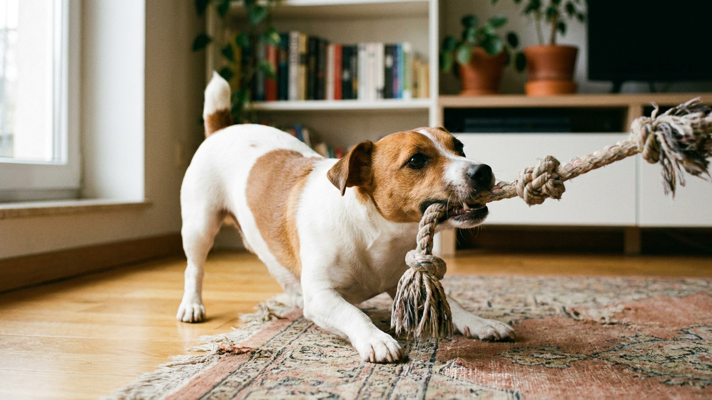

Джек-рассел в квартире: 6 способов разрядить терьера без двора

13 июня 2026 · 8 минут чтения · Породы собак
Джек-рассел весит 5–6 кг — примерно как домашний кролик. Но это рабочая норная порода с энергопотреблением спортивной машины. Недостаточно нагруженный джек-рассел разнесёт квартиру, начнёт лаять без остановки или загрызёт всё, до чего дотянется. Шесть способов, которые реально работают в квартирных условиях — без загородного дома и огромного двора.
🐾 Спросите AI-ветеринара прямо сейчас
AnimaLife — приложение, где AI-ветеринар отвечает на вопросы о кошке или собаке 24/7. Бесплатно, без записи и очередей.
Открыть в Telegram → Открыть в MAX →
Почему джек-рассел — не «маленькая и простая» собака
Джек-рассел-терьер был выведен в XIX веке преподобным Джоном Расселом для охоты на лис: собака должна была самостоятельно работать под землёй, часами преследовать добычу и не уставать. Эта генетика никуда не делась — независимо от того, живёт ли джек-рассел на ферме или в студии на третьем этаже.
- Минимальная потребность в нагрузке: 1,5–2 часа активного движения в день.
- Интеллект породы высок — скучающий джек-рассел найдёт себе занятие сам. Обычно разрушительное.
- Порода независима и упряма — дрессировка обязательна с первых недель, иначе собака перехватит лидерство в доме.
Способ 1: апортировка на полную скорость
Самый простой способ быстро разрядить джек-рассела — апортировка с интенсивными бросками. Двадцать минут активных пробежек за мячом на площадке или в парке дают больше, чем час неспешной прогулки.
- Джек-рассел с хорошим апортом — счастливая собака и счастливый хозяин.
- Фрисби, теннисный мяч, резиновая игрушка — выбирайте то, за чем ваша собака бежит охотнее всего.
- Не ограничивайтесь одним направлением: броски в разные стороны, смена ритма, неожиданные направления — поддерживают интерес и дополнительно нагружают мозг.
Способ 2: нюхательные игры дома
Работа носом — самая мощная умственная нагрузка для собаки. 15–20 минут поиска спрятанного лакомства по квартире эквивалентны 30–40 минутам физической прогулки по степени усталости.
- Нюхательный коврик: рассыпьте корм или мелкие лакомства в ворсе — пусть ищет.
- «Прятки» с едой: разложите кусочки в 5–7 мест по квартире и дайте команду искать.
- Конги и головоломки: резиновая игрушка-конг, набитая влажным кормом или пастой, — занятие на 20–30 минут.
- Постепенно усложняйте задачи: сначала прячьте на виду, потом — под диваном, за дверью, на полке.
Способ 3: дрессировка как разрядка
Обучение командам — это и нагрузка, и структура. Джек-рассел, который понимает, что от него ожидается, значительно спокойнее неученого.
- 10–15 минут работы с командами дважды в день снимают нервное напряжение лучше, чем просто прогулка.
- Трюки — «кувырок», «дай лапу», «замри» — это не цирк, а задача для мозга.
- Джек-рассел способен освоить команды аджилити на бытовом уровне: перепрыгни, залезь, обойди. Импровизированная трасса из диванных подушек работает.
- Позитивное подкрепление, короткие сессии, заканчивайте на успехе — джек-рассел теряет концентрацию, если занятие затягивается.
Способ 4: социализация с другими собаками
Активная игра с другой собакой за 30 минут даёт то, что хозяин не воспроизведёт за час прогулки. Джек-рассел — социальная порода и при правильной социализации охотно играет.
- Площадки для собак без поводка — оптимальная среда для разрядки.
- Джек-рассел может быть агрессивным к собакам своего пола или к крупным собакам — следите за сигналами тела и не допускайте эскалации.
- Регулярные встречи с одной-двумя знакомыми собаками работают лучше случайных знакомств.
Способ 5: долгая прогулка с «свободным носом»
Прогулка, где собака идёт по запахам и исследует территорию на длинном поводке, нагружает нервную систему иначе, чем быстрый бег. Для джек-рассела это не замена интенсивной нагрузке, но важное дополнение.
- Длинный поводок 5–8 м или флекси даёт собаке исследовать запахи самостоятельно.
- Маршрут по новым местам — незнакомые запахи нагружают мозг сильнее привычного пути.
- Комбинируйте: 20 минут апортировки + 20 минут свободного исследования на длинном поводке.
Способ 6: предсказуемый режим как фундамент спокойствия
Джек-рассел, который знает: в 8 утра прогулка, в 12 игра с хозяином, в 20 тренировка — ведёт себя значительно спокойнее собаки с хаотичным режимом. Непредсказуемость создаёт тревогу, тревога усиливает деструктивное поведение.
- Закрепите время прогулок и активности — придерживайтесь расписания даже в выходные.
- Перед уходом из дома: дайте нагрузку. Уставший джек-рассел спит, ненагруженный — ищет приключений.
- Место для сна — своя лежанка или клетка. Джек-рассел, у которого есть «берлога», лучше расслабляется.
Когда нагрузки недостаточно: поведенческие сигналы
Если джек-рассел ведёт себя беспокойно, разрушает вещи, лает без остановки или грызёт себя — это не «плохая порода». Это собака, которой не хватает нагрузки или структуры.
- Разрушение вещей и скуление при одиночестве — классический недонагруженный терьер.
- Гиперактивность при встрече с гостями — избыток невыброшенной энергии.
- Навязчивое поведение (гоняет хвост, грызёт лапы) — сигнал стресса, нужна консультация кинолога или ветеринарного поведенца.
🐾 Дневник здоровья питомца — в кармане
Вес, прививки, симптомы и напоминания в одном приложении. AnimaLife следит за здоровьем питомца вместо вас.
Завести дневник → Открыть в MAX →
🐾 Понравился разбор?
Подпишитесь на канал — каждый день разбираем по одному тревожному симптому у кошек и собак: что в пределах нормы, а когда пора к врачу. Подпишитесь, чтобы не пропустить разбор, который может спасти здоровье вашего питомца.
Материал носит информационный характер и не заменяет очную консультацию ветеринара.
← Все статьи · Открыть AnimaLife в Telegram · RSS